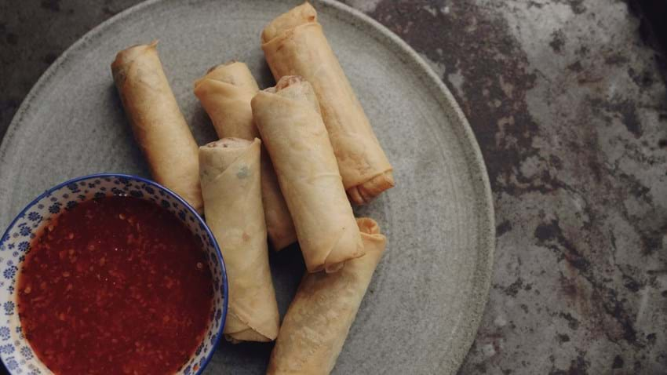

Spring Rolls

Description
Spring roll is a widespread East Asian food dish. It can be prepared in different ways, but always consists of a pasta-like thin dough wrapped around a filling, which can consist of meat, fish or vegetables.
Ingredients
- 4 carrots
- 200 g white cabbage
- 1 tablespoon olive oil
- 2 teaspoons curry
- 2 cloves of garlic
- 1 tablespoon freshly grated ginger
- 300 g minced beef, no more than 12% fat
- salt and pepper
- 6 sheets of phyllo dough
- 1 egg white
- 1 tablespoon oil for brushing
- Sour sweet sauce
- 1½ dl water
- 1½ tablespoons vinegar
- 1½ tablespoons sugar
- 2 tablespoons tomato puree
- 1 clove of garlic
- 2 teaspoons cornstarch
- salt
Steps
Filling:
- Peel the carrots and grate them coarsely on a grater
- Cut the cabbage very finely
- Heat the oil in a pan and fry the curry in it
- Add the pressed garlic, ginger, carrots and cabbage and fry it on a good heat for a few minutes
- Add meat and brown well
- Turn well so the vegetables don't burn
- Season the filling with salt and pepper
- Cut each piece of phyllo dough into two equal parts, making 12 pieces in total
- Fold each piece of phyllo dough along the long side
- Fold each piece of phyllo dough along the long side
- Divide 2 tbsp. fill the center of the dough
- Brush with egg white all around. Fold in the edges and roll the dough tightly around the filling, as for a roulade
- Place the phyllo rolls on a baking tray lined with baking paper. Brush the rolls with oil and bake them in the oven at 200 degrees for approx. 15 minutes until they are golden
Sweet and sour sauce:
- Put water, sugar, vinegar, tomato puree and pressed garlic in a small saucepan. Cook it on low heat for approx. 3 minutes
- Stir the cornstarch into a little cold water until smooth and stir it into the sauce. Cook the sauce for another 3 minutes and cool it
- Season the sauce with salt